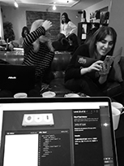

Это было однообразно и одиноко, впрочем,
других дней я не помню. Город, который не верит
слезам, закдывал грязью и бросал на рельсы, а небо
билось в истерике, потому что слишком остро
ощущало осеннюю депрессию.
А может, погода была хорошей.
Просто я этого не заметила.
Как же удручает заполнять это все post factum. Ведь спустя энное количество дней повседневная рутина, на которую не обращаешь внимания в момент ее проживания, вселяет ощущение, что с жизнью что-то не так. Вроде «все, как у людей», а вроде чувствуешь себя брошенным. Какая-то душевная нищета.
Когда идешь под дождем без зонта, легкие наполняет чувство абсурдной свободы. Плевать на поплывший макияж, замусоленные патлы вместо прически и море в ботинках. Пусть и согреть сердце и тело сегодня. Растворяюсь в хрустальных каплях…
Не выспалась (as always), однако, встала в хорошем настроении. Съездила к родственникам, узнала, что мои бабушка и дед уважают Навального :) :) :) Необычно, мне нравится. Из окон гольяновских машин играет Оксимирон, а я понимаю, что нужно брать себя в руки и избавляться от инфантильности.
Нравится эстетика этого около-дневника, но за те полчаса, которые я его заполняю, надоел формат коротких заметок. А может,оно и лучше с точки зрения проверяющего: долгие рефлективные записи какого-то ноунейма (не философа, не литератора, не известного человека) рискуют надоесть. P.s. А еще, с днем рождения, солнышко!:)
 В пятницу все было хорошо, кстати. Все выходные буду ловить губами чью-то улыбку и дурачиться, забывая о мирских бедах. А еще мы с группой встретились, чтоб вместе поучиться. Социализация круто (наверное, i dunno).
Опоздали на поезд. Следующий - нескоро. Полезно бывает строчить что-то откровенное, (прости) сидя теплым осенним вечером около железнодорожных путей. Соскучилась по вдохновению, с которым разлучил затяжной творческий кризис инакрывающие вулканической лавой дедлайны. Может, снова стихи писать? Посмотрим…